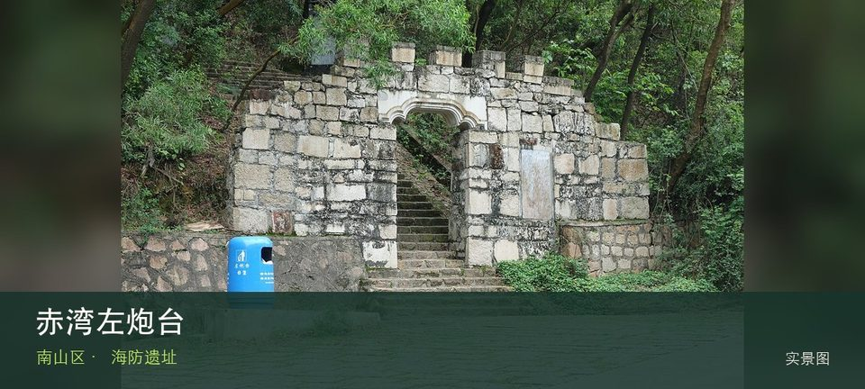

适合谁
适合建筑、地方史和社区观察者；参观时须尊重居民、宗教礼仪与生产秩序。

SHENZHEN GUIDE · 077
赤湾 · 海防遗址
赤湾左炮台位于赤湾鹰嘴山，小型清代海防遗址借山势面向珠江口，炮台、城垣残迹与港口视野能补足蛇口海洋史的军事一面。把注意力放在清代炮台遗迹和珠江口海防视野，能避免只凭名称或网红照片判断这里。阅读这处地点要把清代炮台遗迹与珠江口海防视野放回仍在使用的街巷或社区中，不把历史空间当成布景。先看公开区域，再按居民生活、礼仪和开放边界调整停留，不进入封闭建筑。
WHY GO
适合建筑、地方史和社区观察者；参观时须尊重居民、宗教礼仪与生产秩序。
到达赤湾左炮台后先确认清代炮台遗迹是否可进入，再将珠江口海防视野作为可取消的第二站；遇拥挤、暴晒或降雨就提前折返。
公共交通先到赤湾鹰嘴山片区，再以赤湾左炮台公开参观入口为终点；多入口地点须按计划游线选择入口，并预先锁定返程站点。
车辆停在赤湾左炮台外围正规公共停车场后步行进入；不驶入窄巷，不占居民门口、作业区或消防通道。
10 月至次年 4 月步行较舒适；夏季避开正午，雨天留意石板、台阶和老建筑周边湿滑。
NEARBY IDEAS
 编辑配图·非现场实景
编辑配图·非现场实景
深圳市南山区天后博物馆位于赤湾，依托赤湾天后宫讲述海神信仰、海上交通和民间礼俗，初一十五等特殊日历会直接改变开放与现场秩序。
 编辑配图·非现场实景
编辑配图·非现场实景
文天祥纪念公园位于兴海大道与赤湾六路交会处，近48公顷山体公园以文天祥文化纪念和赤湾港区视野构成历史与地形并重的路线。
 编辑配图·非现场实景
编辑配图·非现场实景
小南山公园位于赤湾港区北侧，较小众的山体从赤湾社区抬升，可观察港口、珠江口和大南山关系，坡度与工业交通界面需要留意。